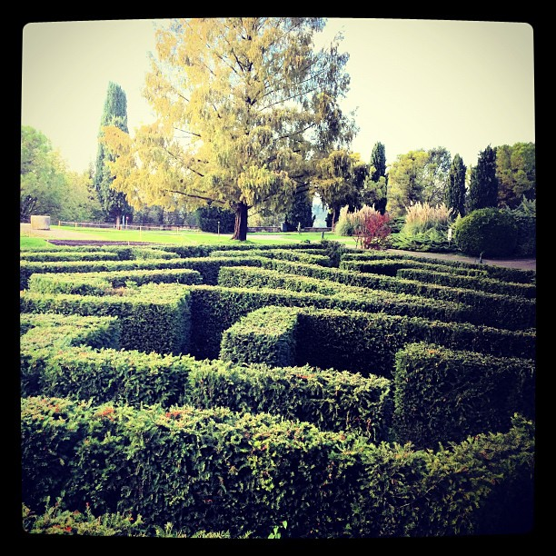

Photo by Francesca Tosolini
If you are planning to go to Italy and to visit the Veneto region, don't forget this name: Parco Sigurtà, near Verona and only thirty minutes away from Sirmione. The park is very large, however, there is a small road train, golf buggies or bicycles by which to tour the gardens. The walks are very pleasant and there are a lot of places to chill out. Among the many points of interest, the kids particularly loved the maze and the farm.